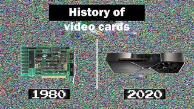

Future Trends
The future of graphics cards promises exciting advancements that will continue to push the boundaries of visual computing. Here are some key areas where we can expect significant enhancements:
1. Advancements in GPU Architecture
More Cores and Enhanced Parallelism: Future GPUs will likely feature even more cores, enabling greater parallel processing capabilities. This will improve performance in both gaming and professional applications.
Improved Efficiency: Newer architectures will focus on better power efficiency, providing higher performance per watt. This will help in reducing heat generation and power consumption.
2. Enhanced Ray Tracing and AI Capabilities
Ray Tracing: Real-time ray tracing technology will continue to evolve, offering more realistic lighting, shadows, and reflections in games and simulations. Future GPUs will have more dedicated RT cores to handle these tasks more efficiently.
AI Integration: AI technologies like NVIDIA’s DLSS (Deep Learning Super Sampling) and AMD’s FidelityFX Super Resolution will become more sophisticated, providing better image quality and higher frame rates through advanced machine learning algorithms.
3. Increased VRAM and Bandwidth
Larger Memory Capacities: Future graphics cards will come with even larger amounts of VRAM, enabling them to handle more complex textures and larger datasets, which is crucial for gaming at higher resolutions and for professional applications.
Higher Memory Bandwidth: Innovations in memory technologies, such as GDDR7 and HBM3, will offer higher bandwidth, allowing for faster data transfer between the GPU and memory.
4. Advanced Manufacturing Processes
Smaller Transistor Sizes: As semiconductor manufacturing processes advance, we will see GPUs built on smaller nanometer processes (e.g., 5nm, 3nm). This will result in higher transistor densities, improving performance and efficiency.
3D Stacking: 3D stacking of components will become more common, allowing for greater performance improvements by vertically integrating memory and other components directly onto the GPU.
5. Better Cooling Solutions
Enhanced Cooling Technologies: Future GPUs will come with more advanced cooling solutions, including hybrid and liquid cooling systems, to manage the increased heat generated by more powerful components.
Smart Cooling: Integration of AI-driven cooling management systems that dynamically adjust fan speeds and thermal profiles based on workload and ambient conditions.